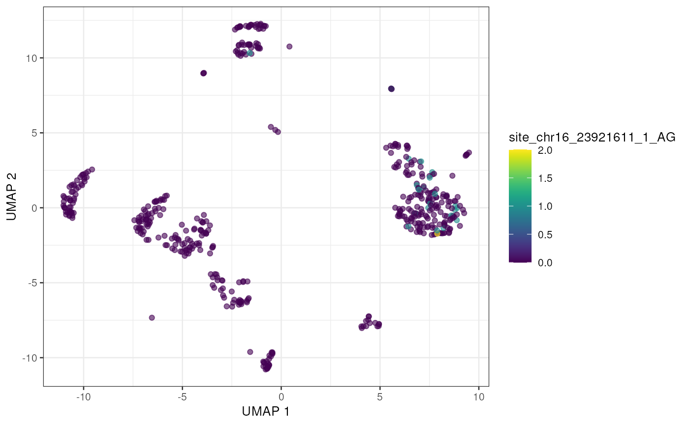

Identifying RNA editing sites in droplet single cell datasets
Kent Riemondy
University of Colorado School of Medicine2023-08-21
Source:vignettes/single-cell.Rmd
single-cell.RmdCharacterizing RNA editing sites in single cell data
This vignette will demonstrate how to use the raer
package to examine RNA editing in droplet-based single cell RNA-seq
data.
Preprocessing
For this example analysis we will use a single cell dataset
containing human PBMC cells from 10x
Genomics. The single cell data was processed using the cellranger
pipeline. The BAM file contains a tag (CB) which indicates
the cell-barcode associated with each alignment, as well as a tag
containing the inferred UMI sequence (UB).
Single cell editing analysis
A subset of a human PBMC scRNA-seq dataset from 10x Genomics, along
with other needed files can be downloaded using
download_human_pbmc().
fns <- download_human_pbmc()
fns## $bam
## [1] "/github/home/.cache/R/raer/10k_PBMC_3p_nextgem_Chromium_X_intron_possorted_chr16_rp.bam"
##
## $bai
## [1] "/github/home/.cache/R/raer/10k_PBMC_3p_nextgem_Chromium_X_intron_possorted_chr16_rp.bam.bai"
##
## $edit_sites
## [1] "/github/home/.cache/R/raer/133d16b712fd_rediportal_chr16.bed.gz"
##
## $sce
## [1] "/github/home/.cache/R/raer/133d9190e9_sce.rds"
bam_fn <- fns$bam
bed_fn <- fns$edit_sitesNext we’ll load in a SingleCellExperiment with cell-type
annotations.
sce <- readRDS(fns$sce)
sce## class: SingleCellExperiment
## dim: 36601 500
## metadata(2): Samples mkrs
## assays(2): counts logcounts
## rownames(36601): MIR1302-2HG FAM138A ... AC007325.4 AC007325.2
## rowData names(3): ID Symbol Type
## colnames(500): TGTTTGTCAGTTAGGG-1 ATCTCTACAAGCTACT-1 ...
## GGGCGTTTCAGGACGA-1 CTATAGGAGATTGTGA-1
## colData names(8): Sample Barcode ... r celltype
## reducedDimNames(2): PCA UMAP
## mainExpName: NULL
## altExpNames(0):
plotUMAP(sce, colour_by = "celltype")
Next we’ll select editing sites to query. For this analysis we will use sites from the Rediportal database.
If the editing sites of interest are not known, one option is to
perform a two pass operation. First, identify editing sites by treating
the data as a bulk-RNA-seq experiment, using for example
pileup_sites(). Then filter these sites to establish a set
of high confidence sites to query in single cell mode.
raer provides a function, pileup_cells(),
which will quantify edited and non-edited UMI counts per cell barcode,
then collect the site counts into a SingleCellExperiment.
The sites to quantified are specified using a custom formatted
GRanges object with 1 base intervals, a strand (+ or -), and
supplemented with metadata columns named REF and
ALT containing the reference and alternate base to query.
In this case we are only interested in A->I editing, so we set the
ref and alt to A and G. Note that the
REF and ALT bases are in reference to strand.
For a - strand interval the bases should be the complement
of the + strand bases.
gr <- import(bed_fn)
gr$name <- NULL
gr$score <- NULL
gr$REF <- "A"
gr$ALT <- "G"
gr## GRanges object with 785208 ranges and 2 metadata columns:
## seqnames ranges strand | REF ALT
## <Rle> <IRanges> <Rle> | <character> <character>
## [1] chr16 22083 - | A G
## [2] chr16 22101 - | A G
## [3] chr16 22107 - | A G
## [4] chr16 22113 - | A G
## [5] chr16 22114 - | A G
## ... ... ... ... . ... ...
## [785204] chr16 90219996 + | A G
## [785205] chr16 90220035 + | A G
## [785206] chr16 90220081 + | A G
## [785207] chr16 90220095 + | A G
## [785208] chr16 90220135 + | A G
## -------
## seqinfo: 1 sequence from an unspecified genome; no seqlengthspileup_cells() accepts a FilterParam()
class to specifying how to performing read and site filtering. Note that
pileup_cells() is strand sensitive by default, so it is
important to ensure that the strand of the input sites is correctly
annotated, and that the library type is correct for the type of data of
interest. For 10x Genomics data, the library type is set to
fr-second-strand, indicating that the strand of the
alignments matches the strand of the RNA.
Note that bam_flags is set to include
duplicate reads by default. If the bamfile has a tag with a UMI
sequence, this can be supplied to the umi_tag argument to
only count 1 read for each CB-UMI pair at each position. This strategy
allows for reads with the same UMI to be counted at multiple independent
sites enabling recovery of more sequence variants than counting only 1
read per UMI.
Processing time can be reduced by operating in parallel across
chromosomes, by supplying a BiocParallel backend to the
BPPARAM argument (e.g. MultiCoreParam()).
outdir <- file.path(tempdir(), "sc_edits")
cbs <- colnames(sce)
e_sce <- pileup_cells(
bamfile = bam_fn,
sites = gr,
cell_barcodes = cbs,
output_directory = outdir,
cb_tag = "CB",
umi_tag = "UB",
param = FilterParam(
min_mapq = 255L,
library_type = "fr-second-strand",
min_variant_reads = 1L
),
verbose = FALSE
)
e_sce## class: SingleCellExperiment
## dim: 3850 500
## metadata(0):
## assays(2): nRef nAlt
## rownames(3850): site_chr16_83540_1_AG site_chr16_83621_1_AG ...
## site_chr16_31453268_2_AG site_chr16_31454303_2_AG
## rowData names(2): REF ALT
## colnames(500): TGTTTGTCAGTTAGGG-1 ATCTCTACAAGCTACT-1 ...
## GGGCGTTTCAGGACGA-1 CTATAGGAGATTGTGA-1
## colData names(0):
## reducedDimNames(0):
## mainExpName: NULL
## altExpNames(0):
dir(outdir)## [1] "barcodes.txt.gz" "counts.mtx.gz" "sites.txt.gz"Next we’ll filter the pileups to find sites with at least 5 cells
with an editing event, and add the editing information to the
SingleCellExperiment as an altExp().
e_sce <- e_sce[rowSums(assays(e_sce)$nAlt > 0) >= 5, ]
e_sce <- calc_edit_frequency(e_sce, edit_from = "Ref", edit_to = "Alt", replace_na = FALSE)
altExp(sce) <- e_sce[, colnames(sce)]With the editing sites added to the gene expression SingleCellExperiment we can use plotting and other methods previously developed for single cell analysis. Here we’ll visualize editing sites with the highest edited read counts.
to_plot <- rownames(altExp(sce))[order(rowSums(assay(altExp(sce), "nAlt")), decreasing = TRUE)]
lapply(to_plot[1:5], function(x) {
plotUMAP(sce, colour_by = x, by_exprs_values = "nAlt")
})## [[1]]##
## [[2]]
##
## [[3]]
##
## [[4]]
##
## [[5]]
Alternatively we can view these top edited sites as a Heatmap, showing the average number of edited reads per site in each cell type.
altExp(sce)$celltype <- sce$celltype
plotGroupedHeatmap(altExp(sce),
features = to_plot[1:25],
group = "celltype",
exprs_values = "nAlt"
)
raer provides additional tools to examine cell type
specific editing. find_celltype_de() will perform
statistical testing to identify sites with different editing frequencies
between clusters/cell types. calc_scAEI() will calculate
the AEI score in single cells.
Session info
## R version 4.3.0 (2023-04-21)
## Platform: x86_64-pc-linux-gnu (64-bit)
## Running under: Ubuntu 22.04.2 LTS
##
## Matrix products: default
## BLAS: /usr/lib/x86_64-linux-gnu/openblas-pthread/libblas.so.3
## LAPACK: /usr/lib/x86_64-linux-gnu/openblas-pthread/libopenblasp-r0.3.20.so; LAPACK version 3.10.0
##
## locale:
## [1] LC_CTYPE=en_US.UTF-8 LC_NUMERIC=C
## [3] LC_TIME=en_US.UTF-8 LC_COLLATE=en_US.UTF-8
## [5] LC_MONETARY=en_US.UTF-8 LC_MESSAGES=en_US.UTF-8
## [7] LC_PAPER=en_US.UTF-8 LC_NAME=C
## [9] LC_ADDRESS=C LC_TELEPHONE=C
## [11] LC_MEASUREMENT=en_US.UTF-8 LC_IDENTIFICATION=C
##
## time zone: UTC
## tzcode source: system (glibc)
##
## attached base packages:
## [1] stats4 stats graphics grDevices utils datasets methods
## [8] base
##
## other attached packages:
## [1] rtracklayer_1.60.1 Rsamtools_2.16.0
## [3] Biostrings_2.68.1 XVector_0.40.0
## [5] scater_1.28.0 ggplot2_3.4.3
## [7] scuttle_1.10.2 SingleCellExperiment_1.22.0
## [9] SummarizedExperiment_1.30.2 Biobase_2.60.0
## [11] GenomicRanges_1.52.0 GenomeInfoDb_1.36.1
## [13] IRanges_2.34.1 S4Vectors_0.38.1
## [15] BiocGenerics_0.46.0 MatrixGenerics_1.12.3
## [17] matrixStats_1.0.0 raer_0.99.8
## [19] BiocStyle_2.28.0
##
## loaded via a namespace (and not attached):
## [1] RColorBrewer_1.1-3 jsonlite_1.8.7
## [3] magrittr_2.0.3 ggbeeswarm_0.7.2
## [5] GenomicFeatures_1.52.1 farver_2.1.1
## [7] rmarkdown_2.24 fs_1.6.3
## [9] BiocIO_1.10.0 zlibbioc_1.46.0
## [11] ragg_1.2.5 vctrs_0.6.3
## [13] memoise_2.0.1 DelayedMatrixStats_1.22.5
## [15] RCurl_1.98-1.12 htmltools_0.5.6
## [17] S4Arrays_1.0.5 progress_1.2.2
## [19] curl_5.0.2 BiocNeighbors_1.18.0
## [21] sass_0.4.7 bslib_0.5.1
## [23] desc_1.4.2 cachem_1.0.8
## [25] GenomicAlignments_1.36.0 lifecycle_1.0.3
## [27] pkgconfig_2.0.3 rsvd_1.0.5
## [29] Matrix_1.6-1 R6_2.5.1
## [31] fastmap_1.1.1 GenomeInfoDbData_1.2.10
## [33] digest_0.6.33 colorspace_2.1-0
## [35] AnnotationDbi_1.62.2 rprojroot_2.0.3
## [37] irlba_2.3.5.1 textshaping_0.3.6
## [39] RSQLite_2.3.1 beachmat_2.16.0
## [41] labeling_0.4.2 filelock_1.0.2
## [43] fansi_1.0.4 httr_1.4.7
## [45] abind_1.4-5 compiler_4.3.0
## [47] bit64_4.0.5 withr_2.5.0
## [49] BiocParallel_1.34.2 viridis_0.6.4
## [51] DBI_1.1.3 highr_0.10
## [53] R.utils_2.12.2 biomaRt_2.56.1
## [55] rappdirs_0.3.3 DelayedArray_0.26.7
## [57] rjson_0.2.21 tools_4.3.0
## [59] vipor_0.4.5 beeswarm_0.4.0
## [61] R.oo_1.25.0 glue_1.6.2
## [63] restfulr_0.0.15 grid_4.3.0
## [65] generics_0.1.3 gtable_0.3.3
## [67] BSgenome_1.68.0 R.methodsS3_1.8.2
## [69] data.table_1.14.8 hms_1.1.3
## [71] BiocSingular_1.16.0 ScaledMatrix_1.8.1
## [73] xml2_1.3.5 utf8_1.2.3
## [75] ggrepel_0.9.3 pillar_1.9.0
## [77] stringr_1.5.0 dplyr_1.1.2
## [79] BiocFileCache_2.8.0 lattice_0.21-8
## [81] bit_4.0.5 tidyselect_1.2.0
## [83] knitr_1.43 gridExtra_2.3
## [85] bookdown_0.35 xfun_0.40
## [87] pheatmap_1.0.12 stringi_1.7.12
## [89] yaml_2.3.7 evaluate_0.21
## [91] codetools_0.2-19 tibble_3.2.1
## [93] BiocManager_1.30.22 cli_3.6.1
## [95] systemfonts_1.0.4 munsell_0.5.0
## [97] jquerylib_0.1.4 Rcpp_1.0.11
## [99] dbplyr_2.3.3 png_0.1-8
## [101] XML_3.99-0.14 parallel_4.3.0
## [103] pkgdown_2.0.7 blob_1.2.4
## [105] prettyunits_1.1.1 sparseMatrixStats_1.12.2
## [107] bitops_1.0-7 viridisLite_0.4.2
## [109] scales_1.2.1 purrr_1.0.2
## [111] crayon_1.5.2 rlang_1.1.1
## [113] KEGGREST_1.40.0